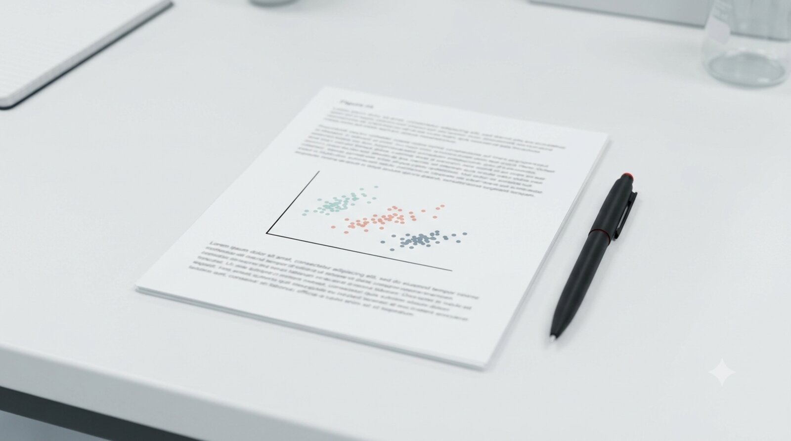

Getting Started in a Reproducible Biostatistics Lab: A Student Reading Guide
A map drawn before the journey: knowing which signposts matter changes what you notice along the way.
Introduction
Every year a new graduate student arrives in the lab with a small dataset – twelve columns, two or three hundred rows, no codebook, and a clear scientific question. The student wants to begin the analysis immediately. Before a single line of R code is written, however, there is a substantial amount of infrastructure to absorb. That infrastructure includes a command-line environment, a version-control habit, a reproducible project structure, and a shared toolchain that ensures the professor can run the same code two years later without debugging a broken environment.
This post exists because that infrastructure is documented across a series of posts on this blog, and the reading order matters. A student who reads the R language posts before understanding why the lab uses Docker will not know what they are R-coding for. A student who dives into the analysis posts before setting up their shell environment will spend their first week debugging path problems.
What follows is the professor’s recommended sequence: eight posts, with a one-paragraph rationale for each. The total reading time is roughly eight to twelve hours, spread across the first two weeks of the rotation. Code-along exercises within each post add two to four additional hours. By the end, a student will have a working lab environment, a first reproducible compendium, and a completed analysis of a small public dataset that mirrors the structure of the research data waiting for them.
Motivations
- New students consistently underestimate the cost of environment fragility; a principled introduction prevents the most common first-year productivity loss.
- The lab’s toolchain (Docker, renv, zzcollab, Quarto) has a learning curve that is much shallower with a map than without one.
- An explicit reading sequence sets consistent expectations across students and rotations, regardless of prior computational background.
Objectives
- Provide an annotated, sequenced reading list that a student can work through independently.
- Explain why each post belongs at its position in the sequence rather than earlier or later.
- Set honest expectations about what a student will and will not be able to do after completing each post.

What is this reading sequence?
The eight posts below span three clusters of this blog: the Workflow Construct cluster (environment setup), the zzcollab Compendia cluster (reproducible project structure), and the Palmer Penguins Arc (applied data analysis). The sequence is deliberately cross-cluster because learning the environment without doing analysis, or doing analysis without a reproducible environment, produces an incomplete outcome in either direction.
Posts marked [no code required] can be read without a terminal open. Posts marked [code-along] contain exercises that the student should reproduce on their own machine before moving forward.
Prerequisites
The student is assumed to have:
- A macOS or Linux laptop with administrator access.
- An active GitHub account.
- No prior Docker experience is required.
- Familiarity with R at the level of BIOS 600 or equivalent is helpful but not strictly required for the first four posts.
The Reading Sequence
Post 1 – A Workflow Construct for the Modern Data Scientist
Cluster: Workflow Construct | Link: wf-construct-overview-anchor
Read this first because it provides the conceptual map for everything that follows. The post documents the nine layers of the lab’s computational stack – hardware, operating system, file system, shell, editor, scripts, applications, cloud, and backup – and explains why each layer is treated as a first-class reproducibility concern. A student who skips this post and goes directly to the R tutorials will eventually hit a problem that requires understanding the layer below R. At that point they will not know where to look.
What the student will be able to do after reading: articulate why reproducibility requires more than pinned package versions, and name the layer of the stack where any given configuration problem originates.
Estimated reading time: 30 minutes. [no code required]
Post 2 – Unix Command-Line Workspace Setup for Data Science Researchers
Cluster: Workflow Construct | Link: wf-unix-workspace-config
Read this second because the remaining posts assume fluency with the terminal. The post builds the terminal layer, the shell layer, and the dotfiles repository that keeps a research machine consistent. Students who use RStudio exclusively and have never opened a terminal will find this post the steepest climb in the sequence. It is deliberately placed early so the discomfort is behind them before the reproducibility infrastructure adds cognitive load.
What the student will be able to do after reading: open a terminal, navigate the file system, install a package manager, and configure a shell prompt.
Estimated reading time: 45 minutes. [code-along]
Post 3 – Multi-Laptop macOS Bootstrap: Migrating Dotfiles to a
Versioned Git Repository
Cluster: Workflow Construct | Link: wf-multi-laptop-dotfiles-bootstrap
Read this third because the lab expects configuration to be version-controlled from day one. This post explains how to move shell configuration files into a git repository so that rebuilding a machine (or adding a second one) is a two-command operation rather than a week of re-configuration. Students who have never used git will find a gentle first encounter here; the patterns introduced are used in every subsequent post.
What the student will be able to do after reading: create a dotfiles repository, commit their shell configuration, and understand the difference between a symlink and a copy.
Estimated reading time: 45 minutes. [code-along]
Post 4 – Setting Up Git for Data Science Workflows
Cluster: Workflow Construct | Link: wf-git-for-data-science (Note: this post is currently in draft; the professor will share the pre-publication PDF directly.)
Read this fourth because version control is the single most impactful habit a student can build in their first month. The post covers the configuration decisions that matter specifically for data science work. These include ignoring large data files, committing analysis scripts separately from rendered outputs, and writing commit messages that explain why a change was made rather than what was changed. The Palmer Penguins analysis in Post 8 will produce several dozen commits; this post establishes what those commits should look like.
What the student will be able to do after reading: configure git for data science, commit code with informative messages, and understand when not to commit a file.
Estimated reading time: 40 minutes. [code-along]
Post 5 – Reproducible Blog Posts with ZZCOLLAB: A Quarto Workflow
Cluster: zzcollab Compendia | Link: zc-quarto-compendium-intro
Read this fifth because it introduces the zzcollab framework that the lab uses for every analysis project. The post explains the Five Pillars of reproducibility (Dockerfile, renv.lock, .Rprofile, source code, research data) and shows how a single zzc analysis command scaffolds a project that satisfies all five. Students who have completed Posts 1 through 4 will recognize every tool introduced here; the new element is understanding how they fit together in a single project directory.
What the student will be able to do after reading: explain the Five Pillars, run zzc analysis to create a compendium, and understand what the generated Dockerfile is doing.
Estimated reading time: 50 minutes. [code-along]
Post 6 – zzcollab Analysis Profile Walkthrough: A 55-Item
Step-by-Step Guide
Cluster: zzcollab Compendia / penguins-arc | Link: zc-analysis-profile-walkthrough
Read this sixth because it is the most detailed practical guide the lab has produced. The 55-item checklist walks through every command, every R snippet, and every file the student will need to produce when setting up a real analysis project. The walkthrough uses a small Palmer Penguins dummy dataset identical in structure to the datasets students bring from the clinic. Completing this post is the capstone of the environment-setup phase; after it, the student has a running Docker container with a verified R environment, a working renv snapshot, and a Quarto report that renders to PDF inside the container.
What the student will be able to do after reading: build a Docker image from a generated Dockerfile, enter the container, install R packages, snapshot with renv, and render a Quarto report.
Estimated reading time: 90 minutes. [code-along, intensive]
Post 7 – The Pipe Equivalence Myth: When f() |> g() Is Not
the Same as g(f())
Cluster: R Language | Link: rl-pipe-equivalence-myth
Read this seventh because the analysis in Post 8 relies on idiomatic tidyverse pipe chains, and a subtle but important R semantic is easy to misapply. This post demonstrates precisely when piped and nested function calls are not interchangeable, using a worked example drawn from expression-capturing wrappers. Students without deep R experience will find this post eye- opening; students with prior R experience will find it clarifies something they may have accepted on faith. Either way, it prevents a class of silent bugs that appear in clinical data workflows.
What the student will be able to do after reading: predict when pipe-rewriting a nested call changes behavior, and write a minimal reproducible example to test the boundary.
Estimated reading time: 30 minutes. [no code required, but code-along is valuable]
Post 8 – Palmer Penguins Part 1: Exploratory Data Analysis
and Simple Regression
Cluster: Palmer Penguins Arc | Link: pp-eda
Read this last because it applies all preceding infrastructure to a complete statistical analysis. The dataset (344 penguins, three species, seven morphological measurements) is intentionally small and public – the same scale as many clinical pilot studies. The post covers exploratory visualization, a simple linear regression of body mass on flipper length, residual diagnostics, and a species-stratified reanalysis that reveals the importance of biological confounders. The compendium structure from Post 6 is assumed throughout; the student should complete this analysis inside the Docker container they built in that post.
What the student will be able to do after reading: run a complete EDA-to-regression analysis inside a reproducible compendium, interpret residual plots, and recognize when a confounder materially changes a regression estimate.
Estimated reading time: 60 minutes. [code-along]
A Note on Sequence Flexibility
Posts 1 through 3 can be read in a single sitting before the student touches R at all. Posts 4 through 6 form a contiguous setup block that should not be split across more than three sessions; the commands build on each other and the student will benefit from working memory continuity. Post 7 can be moved forward to any point after Post 3 if the student has prior R experience and wants an early technical anchor. Post 8 should always come last.
Students who arrive with a working Unix environment and prior git experience may skip Posts 2 and 3. Students who arrive with a working R environment and ggplot2 fluency may skim Post 7. No student should skip Post 5 or Post 6, regardless of prior experience.
Things to Watch Out For
- Docker disk usage. The
rocker/tidyversebase image is approximately 1.2 GB. Students on a shared machine or with a limited SSD should verify available space before Post 6. wf-git-for-data-scienceis currently in draft. Request the pre-publication PDF from the professor if the post is not yet published when you begin.- renv restore failures. If
renv::restore()fails inside the container, the most common cause is a PPM snapshot date that predates the package version. The 55-item walkthrough (Post 6) documents the recovery steps. - Inline R evaluation in Quarto. Post 8 uses inline
`r `expressions in prose. These are evaluated regardless of the document-leveleval: falsesetting. A student who setseval: falseto suppress code blocks will still see inline expressions attempt to run. - Pipe version mismatch. The lab uses the native R pipe
|>(R 4.1+). Code copied from older tutorials using%>%will behave differently in subtle ways; Post 7 explains exactly where the difference matters. - Shell escaping in Docker. Several Makefile targets in Post 6 use single-quoted R expressions passed to
Rscript -e. Double-quoting, nested variables, or$characters inside those expressions require careful escaping; the walkthrough flags the three locations where this trips up new students.
Lessons Learned
Technical. The Five Pillars framework (Post 5) converts what appears to be a collection of independent tools into a coherent reproducibility contract. Once a student understands that the Dockerfile, renv.lock, and .Rprofile are three sides of the same constraint, the lab’s conventions stop feeling arbitrary and start feeling inevitable.
Process. The most efficient path through this reading list is one where the student builds a single compendium throughout Posts 5, 6, and 8, adding to it incrementally rather than creating three separate projects. The professor recommends assigning a single directory name at the start of Post 5 and carrying it through to the end of Post 8.
Philosophical. Reproducibility is not a property of a finished analysis; it is a property of the process that produced it. A student who runs every code block in Posts 5 and 6 but skips the git commits has a directory that renders but not a compendium that reproduces. The distinction matters when, six months later, a reviewer asks for the exact code used to produce Table 1.
Limitations
- The reading list is calibrated to the lab’s current toolchain. Students joining the lab more than twelve months after this post’s date should verify that the zzcollab version referenced in Post 6 matches the version installed in the lab’s current base image.
- Post 4 (
wf-git-for-data-science) is in draft; the reading sequence has a gap at that position. A student reading this list after the post is published should treat it as a required stop, not an optional one. - The sequence covers setup and a first analysis only. It does not address more advanced topics (multiple regression, cross-validation, random-forest models) that appear in Posts 50 through 56 of the Palmer Penguins Arc.
Opportunities
- A lab-internal Slack channel or discussion group where students compare notes on the 55-item walkthrough (Post 6) would substantially reduce the time spent on the three or four predictable sticking points.
- The sequence could be extended by two posts to include
pp-multiple-regressionandpp-diagnostics, which introduce concepts (confounding, residual patterns) that are immediately applicable to most clinical pilot datasets. - A short ‘diagnostic quiz’ after Post 5 and Post 6 – can the student rebuild their container from scratch in under ten minutes? – would give the professor an early signal on whether the infrastructure is genuinely understood or merely completed.
Wrapping Up
What Did We Learn?
A new graduate student who completes this reading sequence in order will have traversed the same conceptual arc that took most senior lab members two or three years of trial and error: from a bare terminal to a containerized, version-controlled, reproducibly rendered analysis. The eight posts together take roughly twelve hours of active engagement. The skills they build will be used on every project the student works on for the remainder of their graduate career.
The sequence is not an onboarding checklist. It is a map. The student who finishes Post 8 has not arrived; they have acquired the vocabulary and habits that make the real work possible.
See Also
For the full Palmer Penguins analysis arc (Posts 50 through 56), see:
- pp-multiple-regression – Post 51
- pp-cross-validation – Post 52
- pp-diagnostics – Post 53
- pp-random-forest – Post 54
- pp-body-mass-prediction – Post 55
- pp-grouped-plots-with-purrr – Post 56
For the complete zzcollab documentation, see zzcollab.sh documentation.
Reproducibility
This post contains no embedded R code. There is nothing to reproduce computationally. The reading list is current as of June 2026; the professor will update it when post URLs change or new required posts are added to the sequence.
Let’s Connect
If you are a new student in the lab and have questions about this reading sequence, reach out via the lab’s internal Slack. If you are reading this from outside the lab and want to discuss the zzcollab framework or the lab’s reproducibility practices, open an issue on the zzcollab GitHub repository or contact the author directly.